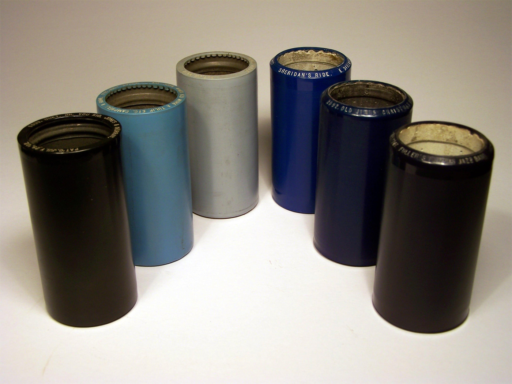

2" open reel audiotape. Image by Flickr user DRs Kulturarvsprojekt, available under a Creative Commons Attribution ShareAlike license (CC BY-SA 2.0). Courtesy of the Danish Broadcasting Corporation.
Compact cassette. Image by Lori Dedeyan, available under a Creative Commons Attribution-NonCommercial-ShareAlike license (CC BY-NC-SA 2.0). Courtesy of UCLA Library Special Collections.
Microcassette (foreground) and compact cassette. Note the difference in scale. Image by Flickr user Malcohol, available under a Creative Commons Attribution ShareAlike license (CC BY-SA 3.0).
DAT cassettes. Image by Lori Dedeyan, available under a Creative Commons Attribution-NonCommercial-ShareAlike license (CC BY-NC-SA 2.0). Courtesy of UCLA Library Special Collections.

Plastic cylinders. 4-minute plastic cylinders are found in a variety of shades. Those on the left are Indestructible brand; on the right are Edison Blue Amberols. Image courtesy of the Antique Phonograph Society.
9.5mm film strip. Three frames of cine film displaying the iconic central sprocket perforations. Image captured by Wikimedia Commons user Velela, available under a Creative Commons Attribution ShareAlike license (CC BY-SA 2.5). Film content available in the public domain.
16mm film in a metal can, unspooling. Image by Flickr user DRs Kulturarvsprojekt, available under a Creative Commons Attribution ShareAlike license (CC BY-SA 2.0). Courtesy of the Danish Broadcasting Corporation.
8mm color film. Note the oblong film sprocket perforations. Image by Flickr user Ian, available under a Creative Commons Attribution-NonCommercial license (CC BY-NC 2.0).
Super 8 film detail. Note the square sprocket perforations. Image by Flickr user Edgar Vonk, available under a Creative Commons Attribution-NonCommercial-ShareAlike license (CC BY-NC-SA).
Laserdisc. Image by Lori Dedeyan, available under a Creative Commons Attribution-NonCommercial-ShareAlike license (CC BY-NC-SA 2.0). Courtesy of UCLA Library Special Collections.
Base Material
Acrylic disc
Identification
Discs are approximately 12" (30.4cm) in diameter, or the size of a standard LP vinyl disc
Preservation
LaserDiscs are subject to mechanical and surface contaminants.
Discs may exhibit surface-crazing, a milky white, lattice, or spider web-like pattern.
Can suffer from laser rot, where the aluminum loses its reflectivity and the quality of the playback signal degrades.
Compact discs. Image by Lori Dedeyan, available under a Creative Commons Attribution-NonCommercial-ShareAlike license (CC BY-NC-SA 2.0). Courtesy of UCLA Library Special Collections.
Base Material
Polycarbonate plastic disc; CDR/CDRW may use dyes in surface layer
Identification
Preservation
Surface scratches, gouges, and smudges can inhibit playback of the disc.
Disc rot can occur when aluminum layer oxidizes, leading to the loss of data.
DVDs. Image by Lori Dedeyan, available under a Creative Commons Attribution-NonCommercial-ShareAlike license (CC BY-NC-SA 2.0). Courtesy of UCLA Library Special Collections.
Base Material
Polycarbonate plastic disc; DVDR and DVDRW may use dyes in surface layer
Shellac 78 with original fiberboard sleeve. Although many discs will be found in these enclosures, they are not recommended for long-term storage and should be assumed to be acidic. Image by Flickr user DRs Kulturarvsprojekt, available under a Creative Commons Attribution ShareAlike license (CC BY-SA 2.0).
2" open reel videotape with plastic case. Image by Flickr user DRs Kulturarvsprojekt, available under a Creative Commons Attribution ShareAlike license (CC BY-SA 2.0). Courtesy of the Danish Broadcasting Corporation.
1" open reel video (Type C) with plastic case. Image by Flickr user DRs Kulturarvsprojekt, available under a Creative Commons Attribution ShareAlike license (CC BY-SA 2.0). Courtesy of the Danish Broadcasting Corporation.
1/2" open reel video (Sony V-32), slightly crinkled tape. Image by Flickr user windthoek, available under a Creative Commons Attribution NonCommercial ShareAlike license (CC BY-NC-SA 2.0).
U-matic cassette and case. Image by Flickr user DRs Kulturarvsprojekt, available under a Creative Commons Attribution ShareAlike license (CC BY-SA 2.0). Courtesy of the Danish Broadcasting Corporation.
Betamax cassette with slip case. Image by Lori Dedeyan, available under a Creative Commons Attribution-NonCommercial-ShareAlike license (CC BY-NC-SA 2.0). Courtesy of UCLA Library Special Collections.
VHS cassette with original cardboard slip case. Image by Flickr user DRs Kulturarvsprojekt, available under a Creative Commons Attribution ShareAlike license (CC BY-SA 2.0). Courtesy of the Danish Broadcasting Corporation.
Betacam SP. Image by Lori Dedeyan, available under a Creative Commons Attribution-NonCommercial-ShareAlike license (CC BY-NC-SA 2.0). Courtesy of UCLA Library Special Collections.
Video8 cassette. Image by Lori Dedeyan, available under a Creative Commons Attribution-NonCommercial-ShareAlike license (CC BY-NC-SA 2.0). Courtesy of UCLA Library Special Collections.
D-2 cassette (left) with DAT (foreground, right) for scale. Image by Flickr user DRs Kulturarvsprojekt, available under a Creative Commons Attribution ShareAlike license (CC BY-SA 2.0). Courtesy of the Danish Broadcasting Corporation.
D-3 with case. Image by Flickr user DRs Kulturarvsprojekt, available under a Creative Commons Attribution ShareAlike license (CC BY-SA 2.0). Courtesy of the Danish Broadcasting Corporation.
Digital Betacam cassette. Image by Lori Dedeyan, available under a Creative Commons Attribution-NonCommercial-ShareAlike license (CC BY-NC-SA 2.0). Courtesy of UCLA Library Special Collections.
MiniDV cassettes. Image by Lori Dedeyan, available under a Creative Commons Attribution-NonCommercial-ShareAlike license (CC BY-NC-SA 2.0). Courtesy of UCLA Library Special Collections.
DVCPro cassettes. Image by Flickr user DRs Kulturarvsprojekt, available under a Creative Commons Attribution ShareAlike license (CC BY-SA 2.0). Courtesy of the Danish Broadcasting Corporation.
Digital video (DV) cassette varieties, left to right: DVCAM (large), DVCPRO (medium), MiniDV. Image by Wikimedia Commons user Grm wnr, available under a Creative Commons Attribution-ShareAlike license (CC BY-SA 3.0).